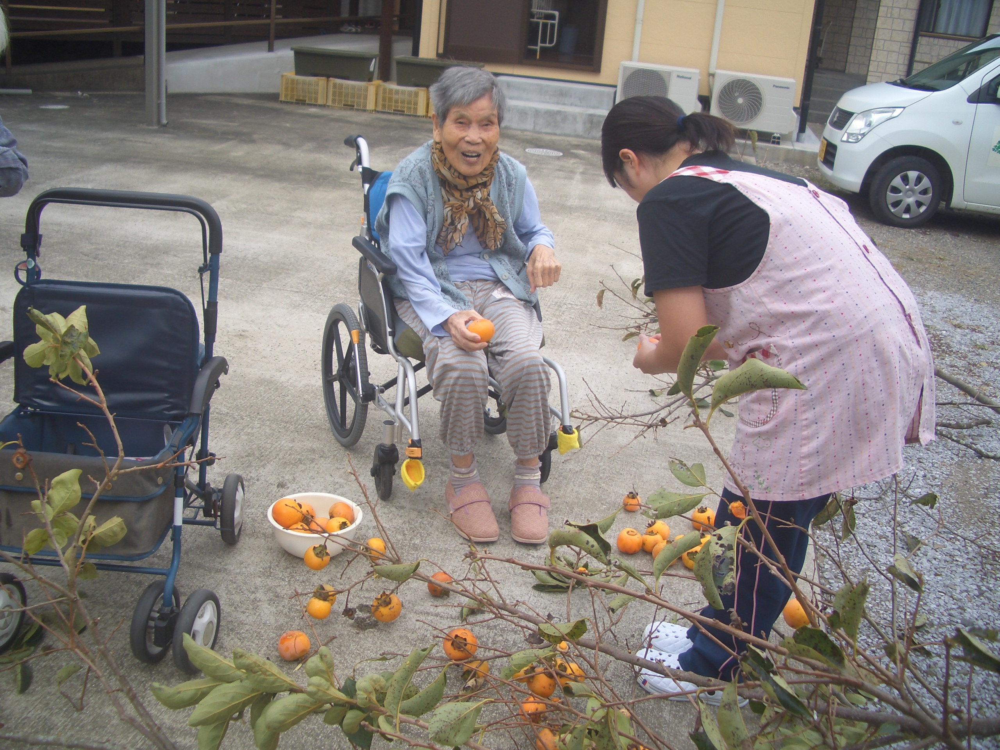
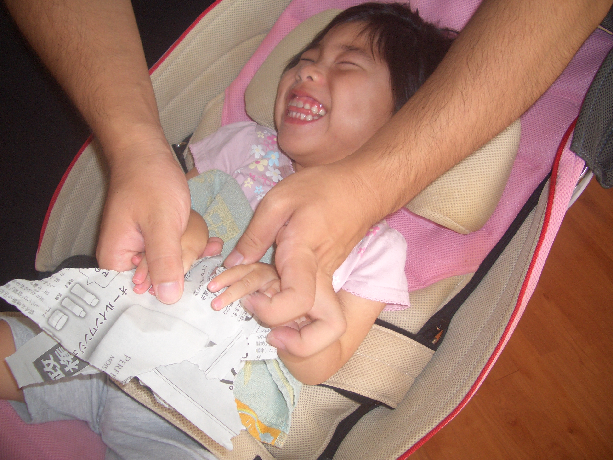
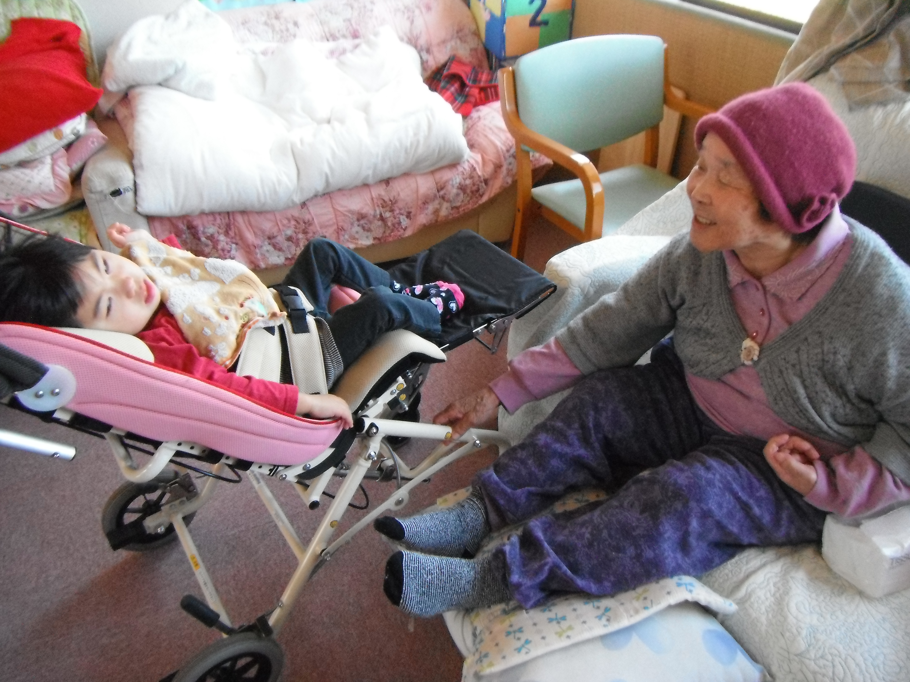

事業内容
有限会社さくらは現在、3つの事業を行っています。
訪問介護

明るく、元気なスタッフが、介護保険法令の趣旨に従って、利用者が可能な限り、 その居宅において、利用者の有する能力に応じて自立した日常生活を営むことができるよう訪問介護を提供しています。
訪問介護は、介護福祉士（ケアワーカー）や訪問介護員（ホームヘルパー）が、被介護者（要介護者・要支援者）の自宅を直接訪問し、 食事・入浴・排泄など直接身体に触れる身体介助をはじめ、掃除・洗濯・調理などの家事面における生活援助、通院時の外出移動サポートなどを行うサービスです。 利用者が自宅にいても自立した日常生活を送れるように生活を支援することが目的です。
光の手

児童福祉法並びに障害者自立支援法等関係法令の理念にのっとり個別支援計画を作成し、 保育士・ＰＴ・看護師等が療育に力を入れ、医療系の児童を含め心身健やかに・楽しい時間が過ごせる様努力しています。 また、同一施設内にある有料老人ホームの老人との触れ合いも多く、コミュニケーションを取る機会も充実しています。
主に重症心身障害児を中心に障害児を含め、児童発達支援・放課後デイサービス・日中一時支援事業を行っています。
結芽

定員５名のアットホームな施設です。 スタッフが一人一人の特徴を把握し、子供や孫の様な感覚で個人に合った介護を提供しています。 また、同施設内に通所して来る児童との交流で、笑顔が溢れ穏やかに過ごしています。